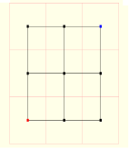
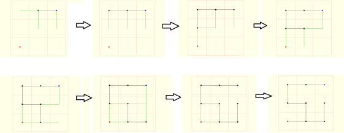
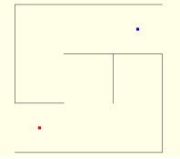

Kita dapat menggunakan algoritma untuk menghitung pohon rentang untuk menciptakan random maze. Kita mulai dengan graf di mana simpul adalah sel dan tepi mewakili tetangga yang bisa kita pindah ke dalam labirin. Dalam graf, semua tetangga potensial terhubung. Sebuah pohon rentang akan ditentukan oleh subset dari tepi di mana semua sel dalam labirin masih terhubung oleh beberapa (unik) jalan. Karena pohon rentang menghubungkan semua sel, kita bisa memutuskan titik mulai dan titik akhir secara sembarang setelah selesai dihitung.
Labirin tersebut dapat dipastikan acak karena untuk menghasilkan permutasi acak dari tepi dipertimbangkan tepi dalam urutan tetap. Setiap sisi bisa ditambahkan (jika menghubungkan dua bagian terputus dari labirin), bisa juga tidak ditambahkan (jika dua simpul sudah terhubung).
Seperti yang telah dijelaskan sebelumnya tentang maze, sebuah maze biasanya terdiri dari suatu ruangan dan tembok. Pertama-tama kita buat sebuah ruangan penuh tembok yang membagi luas dari satu ruangan besar tersebut menjadi beberapa ruangan lagi (luasnya tidak harus sama besar), akan terbentuk sebuah grid dengan ukuran bermacam-macam tergantung dari cara kita membagi ruangan tersebut. Sekarang anggap satu cell ruangan sebagai simpul, maka kita akan mendapat jumlah simpul sebanyak n, dimana n adalah total ruangan yang telah kita buat berdasarkan pembagian ruangan yang telah dilakukan tadi. Kemudian setiap simpul kita hubungkan dengan simpul diatasnya, di kanan dan kiri-nya, juga dibawahnya dengan cara membuat sebuah sisi, dengan begini akan terbentuk sebuah graf terhubung dan bukan berupa pohon. Graf ini disebut sebagai graf dasar untuk lintasan dari maze (sebut saja graf Dm). Sebagai contoh akan kita aplikasikan pada maze yang masih sederhana dengan ukuran grid 3x3 seperti pada gambar dibawah ini.
Setelah membuat graf Dm, kita dapat membuat lintasan untuk maze yang nantinya akan digunakan oleh sang pemain dalam bernavigasi mencari titik finish dari titik start. Lintasan tersebut kita buat dengan membuat pohon rentang minimum dari graf Dm. Dalam hal ini kita memilih sisi secara random untuk ditambahkan ke dalam pohon lintasan maze (sebut saja pohon Tm) selama tidak membentuk sirkuit di dalam pohon Tm. Pertama, pilih satu simpul secara random sebagai titik start dan tambahkan sisi berbobot minimum yang bersisian dengan simpul tersebut ke dalam pohon Tm, kemudian pilih juga titik finish, dan tandai simpul yang bertindak sebagai titik finish. Pada gambar diatas, simpul sebagai titik start ditandai dengan warna biru, sedangkan simpul yang bertindak sebagai titik finish ditandai dengan warna merah. Gambar dibawah akan menjelaskan langkah demi langkah membuat pohon Tm dari graf terhubung Dm.
Pohon lintasan Tm ditandai dengan garis berwarna hitam pada gambar dibawah ini. Untuk garis-garis berwarna hijau, adalah sisi yang bersisian dengan semua simpul pada pohon Tm. Karena terdapat 9 simpul pada graf Dm, maka total langkah untuk kasus ini berjumlah 9-1 = 8 kali. Setiap sisi yang diambil sifatnya random karena semua sisi besar bobotnya sama selama sisi yang diambil tidak membuat sirkuit di dalam pohon Tm, sehingga dari grid ukuran 3x3 ini bisa dibuat pohon lintasan Tm yang berbeda yang akan berbobot sama, hal ini tentunya mengakibatkan bentuk maze yang bermacam-macam. Selesailah sudah pengaplikasian algoritma Spanning Tree sebagai algoritma pembentuk maze atau maze generation algorithm yang dapat membuat berbagai bentuk maze.
Setelah terbentuk pohon lintasan Tm, maka selesai sudah tahap mendesain layout dari lintasan dan juga jalan-jalan bercabang yang merupakan unsur utama dari maze, terakhir kita bentuk maze secara utuh dengan layout lintasan yang tadi kita buat, alhasil jadilah maze dengan ukuran grid 3x3 seperti dibawah ini. Sang solver atau pemain tinggal menelusuri jalan tersebut mulai dari titik biru ke titik merah.
